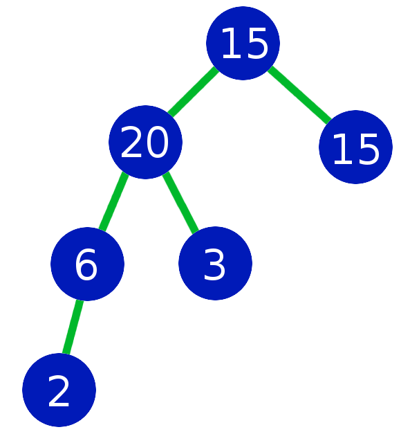
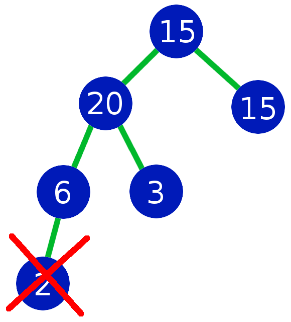
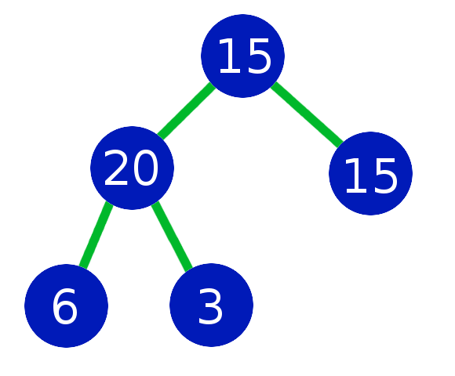
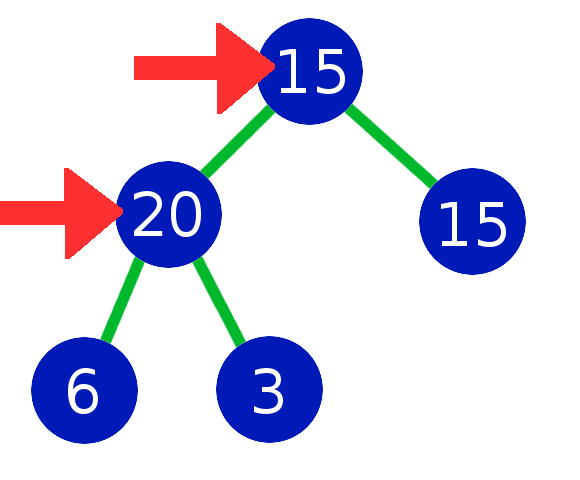
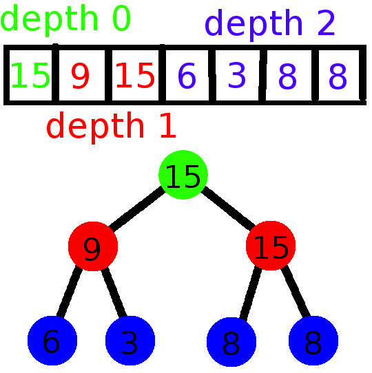
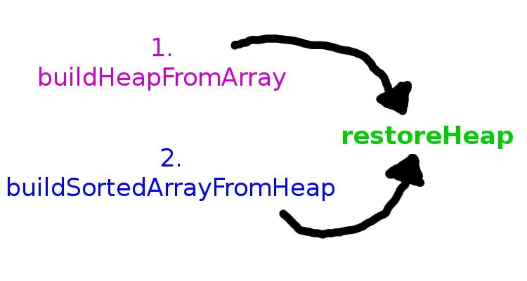
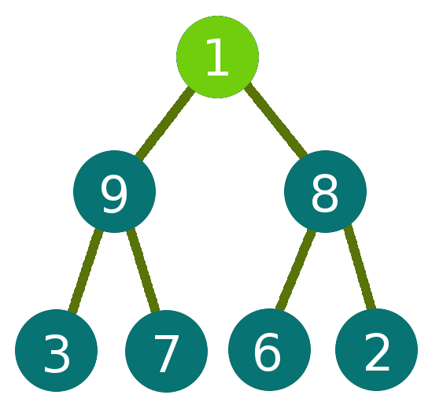
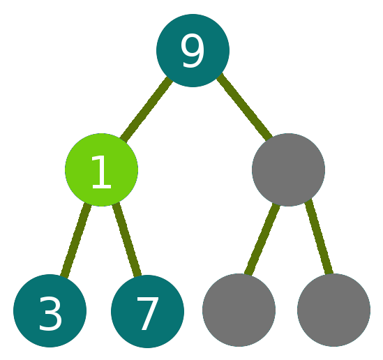
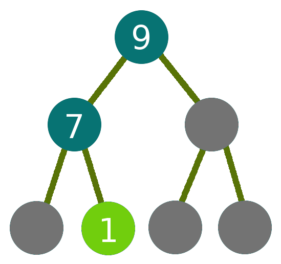

Heapsort
Walkthrough and Analysis
Hi everyone. I'm Peter Graham and today I'll be talking about HEAPSORT.
My goal is for all of you to understand by the end of this presentation 3 things:
1. how heapsort works
2. how to build your own heapsort
and 3. when are some good situations in which to use heapsort
SO, lets dive right in!
What is heapsort?
So, what exactly is heap sort? Heap sort is an efficient sorting algorithm that, as the name suggests, uses heaps as it's underlying data structure.
Why should you care?
There are tons of sorting algorithms out there. Why should you use heapsort over any of those other ones? Well, heap sort is actually a very beautiful algorithm.
- Efficient
- Trustworthy
- Lower memory usage
Here are some of the reasons that heap sort is good.
I'll go into each of these in more detail once we start analyzing heap sort, but first we have to learn how HS works
Binary max-heap?
But before we can get there, you have to understand the underlying data structure that heap sort uses, called binary max-heaps.
So binary max heaps have a few properties that you should know about:
1. BINARY: each node has <= two child nodes.
2. MAX: each child node is <= parent
3. COMPLETE: every depth of the tree, except possibly the last, is completely filled up. It also means that all nodes are left-justified.
What's wrong with this?

So, quick POP QUIZ to refresh your memory: what is wrong with this? how can we make this a valid heap?
Must be complete

One correction you made was that the 2 was out of place, and you're right.
Heaps must be balanced, and that means that every node at depth n-2 and higher must have 2 child nodes.

So the second thing you mentioned is that the 20 was wrong, and you're right.
Heaps (max-heaps) have the property where the a child node must be less than or equal to it's parent.
Child <= Parent

So for now, we'll replace the 20 with something that will work.

So this is our now corrected heap. So a heap states that each parent node should be larger or equal to it's child nodes. The root node is located at the top of the heap, (in this case, 15) and is the largest value.
Store a heap in an array

Indexing formulas
Left child index = parent_index * 2 - 1
Right child index = left_child_index + 1
How to build heapsort
We finally have all the background info necessary to build heap sort.
Heapsort steps
1. buildHeapFromArray
unsorted array → heap
2. buildSortedArrayFromHeap
heap → sorted array

restoreHeap asks two questions:
- Which child node (value) is larger?
- Is larger child <= parent?
Time Complexity
Primitive operation: comparisons
- isSmaller function compares array elements
restoreHeap: worst case
restoreHeap: worst case
restoreHeap: worst case
restoreHeap
- two comparisons per depth
- = O(2*log n + 1)
- = O(log n)